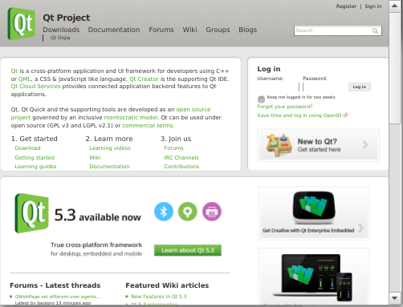

WebView QML Type
A WebView renders web content within a QML application. More...
| Import Statement: | import QtWebKit 3.0 |
Properties
- ErrorDomain : enumeration
- LoadStatus : enumeration
- NavigationRequestAction : enumeration
- NavigationType : enumeration
- canGoBack : bool
- canGoForward : bool
- icon : url
- loadProgress : int
- loading : bool
- title : string
- url : url
Signals
- onLinkHovered(hoveredUrl, hoveredTitle)
- onLoadingChanged(loadRequest)
- onNavigationRequested(request)
Methods
- void goBack()
- void goForward()
- void loadHtml(string html, url baseUrl, url unreachableUrl)
- void reload()
- void stop()
Detailed Description

WebView allows an application to load pages either by URL or an HTML string, and navigate within the session history. By default, links to different pages are loaded within the same WebView, but applications can choose to delegate those links to other functions.
The following example loads a web page, responds to session history context, and intercepts requests for external links. It also makes use of ScrollView from Qt Quick Controls to add scroll bars for the content area.
import QtQuick 2.0 import QtQuick.Controls 1.0 import QtWebKit 3.0 ScrollView { width: 1280 height: 720 WebView { id: webview url: "http://qt-project.org" anchors.fill: parent onNavigationRequested: { // detect URL scheme prefix, most likely an external link var schemaRE = /^\w+:/; if (schemaRE.test(request.url)) { request.action = WebView.AcceptRequest; } else { request.action = WebView.IgnoreRequest; // delegate request.url here } } } }
Property Documentation
Details various high-level error types.
| Constant | Description |
|---|---|
| InternalErrorDomain | Content fails to be interpreted by Qt WebKit. |
| NetworkErrorDomain | Error results from faulty network connection. |
| HttpErrorDomain | Error is produced by server. |
| DownloadErrorDomain | Error in saving file. |
| NoErrorDomain | Unspecified fallback error. |
Reflects a page's load status.
| Constant | Description |
|---|---|
| LoadStartedStatus | Page is currently loading. |
| LoadSucceededStatus | Page has successfully loaded, and is not currently loading. |
| LoadFailedStatus | Page has failed to load, and is not currently loading. |
Specifies a policy when navigating a link to an external page.
| Constant | Description |
|---|---|
| AcceptRequest | Allow navigation to external pages within the web view. |
| IgnoreRequest | Suppress navigation to new pages within the web view. |
Distinguishes context for various navigation actions.
| Constant | Description |
|---|---|
| LinkClickedNavigation | Navigation via link. |
| FormSubmittedNavigation | Form data is posted. |
| BackForwardNavigation | Navigation back and forth within session history. |
| ReloadNavigation | The current page is reloaded. |
| FormResubmittedNavigation | Form data is re-posted. |
| OtherNavigation | Unspecified fallback method of navigation. |
icon : url |
The location of the currently displaying Web site icon, also known as favicon or shortcut icon. This read-only URL corresponds to the image used within a mobile browser application to represent a bookmarked page on the device's home screen.
This example uses the icon property to build an Image element:
Image {
id: appIcon
source: webView.icon != "" ? webView.icon : "fallbackFavIcon.png";
...
}
The amount of the page that has been loaded, expressed as an integer percentage in the range from 0 to 100.
The title of the currently displaying HTML page, a read-only value that reflects the contents of the <title> tag.
url : url |
The location of the currently displaying HTML page. This writable property offers the main interface to load a page into a web view. It functions the same as the window.location DOM property.
See also WebView::loadHtml().
Signal Documentation
Within a mouse-driven interface, this signal is emitted when a mouse pointer passes over a link, corresponding to the mouseover DOM event. (May also occur in touch interfaces for mouseover events that are not cancelled with preventDefault().) The hoveredUrl provides the link's location, and the hoveredTitle is any avalable link text.
Occurs when any page load begins, ends, or fails. Various read-only parameters are available on the loadRequest:
url: the location of the resource that is loading.status: Reflects one of three load states:LoadStartedStatus,LoadSucceededStatus, orLoadFailedStatus. SeeWebView::LoadStatus.errorString: description of load error.errorCode: HTTP error code.errorDomain: high-level error types, one ofNetworkErrorDomain,HttpErrorDomain,InternalErrorDomain,DownloadErrorDomain, orNoErrorDomain. See WebView::ErrorDomain.
See also WebView::loading.
Occurs for various kinds of navigation. If the application listens for this signal, it must set the request.action to either of the following WebView::NavigationRequestAction enum values:
AcceptRequest: Allow navigation to external pages within the web view. This represents the default behavior when no listener is active.IgnoreRequest: Suppress navigation to new pages within the web view. (The listener may then delegate navigation externally to the browser application.)
The request also provides the following read-only values:
url: The location of the requested page.navigationType: contextual information, one ofLinkClickedNavigation,BackForwardNavigation,ReloadNavigation,FormSubmittedNavigation,FormResubmittedNavigation, orOtherNavigationenum values. See WebView::NavigationType.keyboardModifiers: potential states for Qt::KeyboardModifier.mouseButton: potential states for Qt::MouseButton.
Method Documentation
Go backward within the browser's session history, if possible. (Equivalent to the window.history.back() DOM method.)
See also WebView::canGoBack.
Go forward within the browser's session history, if possible. (Equivalent to the window.history.forward() DOM method.)
Loads the specified html as the content of the web view.
(This method offers a lower-level alternative to the url property, which references HTML pages via URL.)
External objects such as stylesheets or images referenced in the HTML document are located relative to baseUrl. For example if provided html was originally retrieved from http://www.example.com/documents/overview.html and that was the base url, then an image referenced with the relative url diagram.png would be looked for at http://www.example.com/documents/diagram.png.
It is important to keep in mind that the html string will be converted to UTF-16 internally. Textual resources, such as scripts or style sheets, will be treated as UTF-16 as well, unless they have an explicit charset property in their referencing tag.
If an unreachableUrl is passed it is used as the url for the loaded content. This is typically used to display error pages for a failed load.
See also WebView::url.